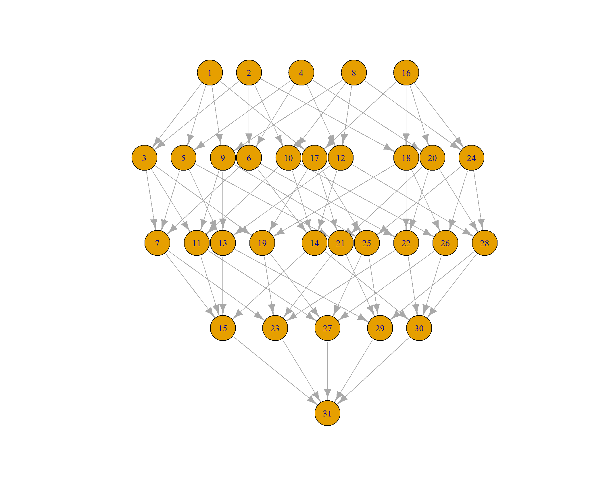

Last updated: 2021-05-13
Checks: 7 0
Knit directory: Theoretical_community_ecology_S2021/
This reproducible R Markdown analysis was created with workflowr (version 1.6.2). The Checks tab describes the reproducibility checks that were applied when the results were created. The Past versions tab lists the development history.
Great! Since the R Markdown file has been committed to the Git repository, you know the exact version of the code that produced these results.
Great job! The global environment was empty. Objects defined in the global environment can affect the analysis in your R Markdown file in unknown ways. For reproduciblity it’s best to always run the code in an empty environment.
The command set.seed(20210408) was run prior to running the code in the R Markdown file. Setting a seed ensures that any results that rely on randomness, e.g. subsampling or permutations, are reproducible.
Great job! Recording the operating system, R version, and package versions is critical for reproducibility.
Nice! There were no cached chunks for this analysis, so you can be confident that you successfully produced the results during this run.
Great job! Using relative paths to the files within your workflowr project makes it easier to run your code on other machines.
Great! You are using Git for version control. Tracking code development and connecting the code version to the results is critical for reproducibility.
The results in this page were generated with repository version a7cf77e. See the Past versions tab to see a history of the changes made to the R Markdown and HTML files.
Note that you need to be careful to ensure that all relevant files for the analysis have been committed to Git prior to generating the results (you can use wflow_publish or wflow_git_commit). workflowr only checks the R Markdown file, but you know if there are other scripts or data files that it depends on. Below is the status of the Git repository when the results were generated:
Ignored files:
Ignored: .Rhistory
Ignored: .Rproj.user/
Note that any generated files, e.g. HTML, png, CSS, etc., are not included in this status report because it is ok for generated content to have uncommitted changes.
These are the previous versions of the repository in which changes were made to the R Markdown (analysis/TCE_HW5.Rmd) and HTML (docs/TCE_HW5.html) files. If you’ve configured a remote Git repository (see ?wflow_git_remote), click on the hyperlinks in the table below to view the files as they were in that past version.
| File | Version | Author | Date | Message |
|---|---|---|---|---|
| Rmd | a7cf77e | KiseokUchicago | 2021-05-13 | HW5_finish |
| html | 9405383 | KiseokUchicago | 2021-05-13 | Build site. |
| Rmd | f955737 | KiseokUchicago | 2021-05-13 | HW5_finish |
| html | ba6736e | KiseokUchicago | 2021-05-13 | Build site. |
| Rmd | f643631 | KiseokUchicago | 2021-05-13 | begin |
Professor: Stefano Allesina (TA: Zach Miller)
Student: Kiseok Lee
Build the assembly graph for a GLV model in which the growth rates of all species are the same, and interactions are given by phylogenetic relatedness.
In particular, consider an ultrametric phylogenetic tree T, and the “variance-covariance” matrix induced by the tree, Σ. Because the tree is ultrametric, then Σii=1 for all i. The off-diagonal elements Σij express the proportion of shared ancestry (and as such 1≥Σij≥0).
Take the GLV model:dxdt=D(x)(1−Σx)
Notice that Σ is positive (semi-)definite by construction. Now build the assembly graph: does it have any interesting property?
Let’s start with constructing binary matrix that represents a tree
# We are going to use a bottom up pairing approach to construct a tree
# the number of branches are 2n-1 (number of species = n)
# Create vector for each species (the most bottom branch)
n = 5
(sampling_matrix <- diag(n)) [,1] [,2] [,3] [,4] [,5]
[1,] 1 0 0 0 0
[2,] 0 1 0 0 0
[3,] 0 0 1 0 0
[4,] 0 0 0 1 0
[5,] 0 0 0 0 1## (Step 1) From these species' most bottom branches, choose two species/clusters to group them. We are going to hierarchically group it, until we group every species into one group (this vector will be [1, 1, 1, 1, ..., 1])
set.seed(1)
(random_2_cols <- sample(dim(sampling_matrix)[2], 2, replace = FALSE, prob = NULL))[1] 1 4# (Step 2) put sampled columns into "accumulative_matrix"
(accumulative_matrix <- sampling_matrix[,random_2_cols]) [,1] [,2]
[1,] 1 0
[2,] 0 0
[3,] 0 0
[4,] 0 1
[5,] 0 0# (Step 3) sum up picked two species/clusters and add it to the "sampling_matrix"
(sampling_matrix <- cbind(sampling_matrix, rowSums(sampling_matrix[,random_2_cols]))) [,1] [,2] [,3] [,4] [,5] [,6]
[1,] 1 0 0 0 0 1
[2,] 0 1 0 0 0 0
[3,] 0 0 1 0 0 0
[4,] 0 0 0 1 0 1
[5,] 0 0 0 0 1 0# (Step 4) remove the randomly picked 2 columns from the "sampling_matrix"
(sampling_matrix <- sampling_matrix[,-random_2_cols, drop = FALSE]) # make the matrix not collapse into vector [,1] [,2] [,3] [,4]
[1,] 0 0 0 1
[2,] 1 0 0 0
[3,] 0 1 0 0
[4,] 0 0 0 1
[5,] 0 0 1 0# repeat this until rowSums(sampling_matrix[,random_2_cols]) is all 1
while (!all(sampling_matrix ==1)){
## (Step 1) From these species, choose two species/clusters to group them.
random_2_cols <- sample(dim(sampling_matrix)[2], 2, replace = FALSE, prob = NULL)
## (Step 2) put sampled columns into "accumulative_matrix"
accumulative_matrix <- cbind(accumulative_matrix, sampling_matrix[,random_2_cols])
# (Step 3) sum 2 columns(species/clusters) picked and add it to the "sampling_matrix"
sampling_matrix <- cbind(sampling_matrix, rowSums(sampling_matrix[,random_2_cols]))
# (Step 4) remove the randomly picked 2 columns from the "sampling_matrix"
sampling_matrix <- sampling_matrix[,-random_2_cols, drop = FALSE] # make the matrix not collapse into vector
sampling_matrix
}
sampling_matrix [,1]
[1,] 1
[2,] 1
[3,] 1
[4,] 1
[5,] 1# include the [1,1,1,....,1] to the "accumulative_matrix"
accumulative_matrix <- cbind(accumulative_matrix,sampling_matrix)
# order the matrix
V <- accumulative_matrix
V <- V[,order(apply(V,2,sum), decreasing=T)] # sum of each column should decrease from left to right
# make the last n columns identity matrix
V <- cbind(V[,1:(n-1)],diag(n))Then, get randomized branch length for 2n-1 branches and calculate the Σ = V x D(b) x VT.
branch_num <- 2*n - 1
(B <- diag(runif(branch_num))) [,1] [,2] [,3] [,4] [,5] [,6] [,7]
[1,] 0.629114 0.00000000 0.0000000 0.0000000 0.0000000 0.0000000 0.0000000
[2,] 0.000000 0.06178627 0.0000000 0.0000000 0.0000000 0.0000000 0.0000000
[3,] 0.000000 0.00000000 0.2059746 0.0000000 0.0000000 0.0000000 0.0000000
[4,] 0.000000 0.00000000 0.0000000 0.1765568 0.0000000 0.0000000 0.0000000
[5,] 0.000000 0.00000000 0.0000000 0.0000000 0.6870228 0.0000000 0.0000000
[6,] 0.000000 0.00000000 0.0000000 0.0000000 0.0000000 0.3841037 0.0000000
[7,] 0.000000 0.00000000 0.0000000 0.0000000 0.0000000 0.0000000 0.7698414
[8,] 0.000000 0.00000000 0.0000000 0.0000000 0.0000000 0.0000000 0.0000000
[9,] 0.000000 0.00000000 0.0000000 0.0000000 0.0000000 0.0000000 0.0000000
[,8] [,9]
[1,] 0.0000000 0.0000000
[2,] 0.0000000 0.0000000
[3,] 0.0000000 0.0000000
[4,] 0.0000000 0.0000000
[5,] 0.0000000 0.0000000
[6,] 0.0000000 0.0000000
[7,] 0.0000000 0.0000000
[8,] 0.4976992 0.0000000
[9,] 0.0000000 0.7176185# Phylogenetic closeness (distance of root to common ancestor)
Phylo_closeness = V %*% B %*% t(V)
Phylo_closeness [,1] [,2] [,3] [,4] [,5]
[1,] 1.5838977 0.6291140 0.6909003 0.8968749 0.6291140
[2,] 0.6291140 1.1897745 0.6291140 0.6291140 0.8056708
[3,] 0.6909003 0.6291140 1.4607417 0.6909003 0.6291140
[4,] 0.8968749 0.6291140 0.6909003 1.3945741 0.6291140
[5,] 0.6291140 0.8056708 0.6291140 0.6291140 1.5232893Scale so that we have an ultrametric tree.
- Distance of root to common ancestor (species 1 to 1, species 2 to 2) of the same species have to be equal (=1).
- I couldn’t figure this out. So I adopt Zach’s method of randomizing internal branches’ length and then adding the length of tips to consummate to 1.
# Internal branches
B_int = diag(runif(n-1))
V_int = V[,-( (n) : (2*n-1) )]
Phylo_int = V_int %*% B_int %*% t(V_int)
Phylo_int [,1] [,2] [,3] [,4] [,5]
[1,] 2.1493865 0.9919061 1.3719413 2.1493865 0.9919061
[2,] 0.9919061 1.9266113 0.9919061 0.9919061 1.9266113
[3,] 1.3719413 0.9919061 1.3719413 1.3719413 0.9919061
[4,] 2.1493865 0.9919061 1.3719413 2.1493865 0.9919061
[5,] 0.9919061 1.9266113 0.9919061 0.9919061 1.9266113# the internal branch length is over 1, so we will make those less than 1 by reducing branch length.
B_int_half <- B_int * 0.2
Phylo_int = V_int %*% B_int_half %*% t(V_int)
Phylo_int [,1] [,2] [,3] [,4] [,5]
[1,] 0.4298773 0.1983812 0.2743883 0.4298773 0.1983812
[2,] 0.1983812 0.3853223 0.1983812 0.1983812 0.3853223
[3,] 0.2743883 0.1983812 0.2743883 0.2743883 0.1983812
[4,] 0.4298773 0.1983812 0.2743883 0.4298773 0.1983812
[5,] 0.1983812 0.3853223 0.1983812 0.1983812 0.3853223# Now as Zach's idea, use the same internal branch length + tip branch length (which is 1 - diagonal of Phylo_int)
scaled_branch_len <- c(diag(B_int_half),1-diag(Phylo_int))
Phylo_closeness_scaled = V %*% diag(scaled_branch_len) %*% t(V)
Phylo_closeness_scaled [,1] [,2] [,3] [,4] [,5]
[1,] 1.0000000 0.1983812 0.2743883 0.4298773 0.1983812
[2,] 0.1983812 1.0000000 0.1983812 0.1983812 0.3853223
[3,] 0.2743883 0.1983812 1.0000000 0.2743883 0.1983812
[4,] 0.4298773 0.1983812 0.2743883 1.0000000 0.1983812
[5,] 0.1983812 0.3853223 0.1983812 0.1983812 1.0000000Now solve the gLV model: dxdt=D(x)(1−Σx)
# Find all feasible solutions
E <- Phylo_closeness_scaled
s <- rep(1,n)
# Stability <=> real part of eigenvalues are all negative
# function
leftmost <- function(M){
eig <- eigen(M, only.values = T)$values
# print(Re(eig)) # print all real part of eigenvalues
return(min(Re(eig))) # the right most eigenvalue
}
feasible_stable_list <- list()
for (subset in 1:(2^n-1)){
presence_vector <- as.numeric(intToBits(subset)[1:n])
s_subset <- s[presence_vector>0]
E_subset <- E[presence_vector>0,presence_vector>0]
x_star <- rep(0,n)
x_star[presence_vector>0] <- solve(E_subset,s_subset)
# check feasible & stable
if((leftmost(E_subset) > 0) & (all(solve(E_subset, s_subset) > 0))){
feasible_stable_list[[length(feasible_stable_list)+1]] <- list(
community = subset,
presence = presence_vector,
xstar = x_star
)
}
}
# feasible_stable_list
length(feasible_stable_list) # all 31 community (2^5 -1 =31)[1] 31All feasible subset community are stable.
Lastly, make the assembly graph
# adjacency matrix
adj_mat <- matrix(0,length(feasible_stable_list),length(feasible_stable_list))
# if community presence matrix of state i (e.g. 10010) is nested in state j (e.g. 10110), then we draw a directed link (i -> j)
# to test the nestedness, loop over all feasible, stable states' presence vector
for (i in 1:dim(adj_mat)[1]){
for (j in 1:dim(adj_mat)[2]){
# presence vectors
vec_i <- feasible_stable_list[[i]]$presence
vec_j <- feasible_stable_list[[j]]$presence
if (all(vec_i <= vec_j)){ # i is nested to j
# only 1 invasion event
if (sum(vec_j - vec_i) == 1) {
# print(paste0(vec_j - vec_i))
adj_mat[i,j] <- 1
}
}
}
}
library(igraph)
assembly_graph <- graph_from_adjacency_matrix(adj_mat)
plot(assembly_graph, layout = layout_with_sugiyama(assembly_graph)$layout) The assembly graph is symmetric and organized (it shows all the combinations of nC1, nC2, nC3, nC4, nC5). It’s because all of our feasible states are stable.
sessionInfo()R version 4.0.3 (2020-10-10)
Platform: x86_64-w64-mingw32/x64 (64-bit)
Running under: Windows 10 x64 (build 19042)
Matrix products: default
locale:
[1] LC_COLLATE=English_United States.1252
[2] LC_CTYPE=English_United States.1252
[3] LC_MONETARY=English_United States.1252
[4] LC_NUMERIC=C
[5] LC_TIME=English_United States.1252
attached base packages:
[1] stats graphics grDevices utils datasets methods base
other attached packages:
[1] igraph_1.2.6 workflowr_1.6.2
loaded via a namespace (and not attached):
[1] Rcpp_1.0.5 whisker_0.4 knitr_1.33 magrittr_2.0.1
[5] R6_2.5.0 rlang_0.4.10 fansi_0.4.2 highr_0.9
[9] stringr_1.4.0 tools_4.0.3 xfun_0.22 utf8_1.1.4
[13] git2r_0.28.0 jquerylib_0.1.4 htmltools_0.5.1.1 ellipsis_0.3.1
[17] rprojroot_2.0.2 yaml_2.2.1 digest_0.6.27 tibble_3.0.4
[21] lifecycle_1.0.0 crayon_1.4.1 later_1.2.0 sass_0.3.1
[25] vctrs_0.3.6 promises_1.2.0.1 fs_1.5.0 glue_1.4.2
[29] evaluate_0.14 rmarkdown_2.7 stringi_1.5.3 bslib_0.2.4
[33] compiler_4.0.3 pillar_1.6.0 jsonlite_1.7.2 httpuv_1.6.0
[37] pkgconfig_2.0.3